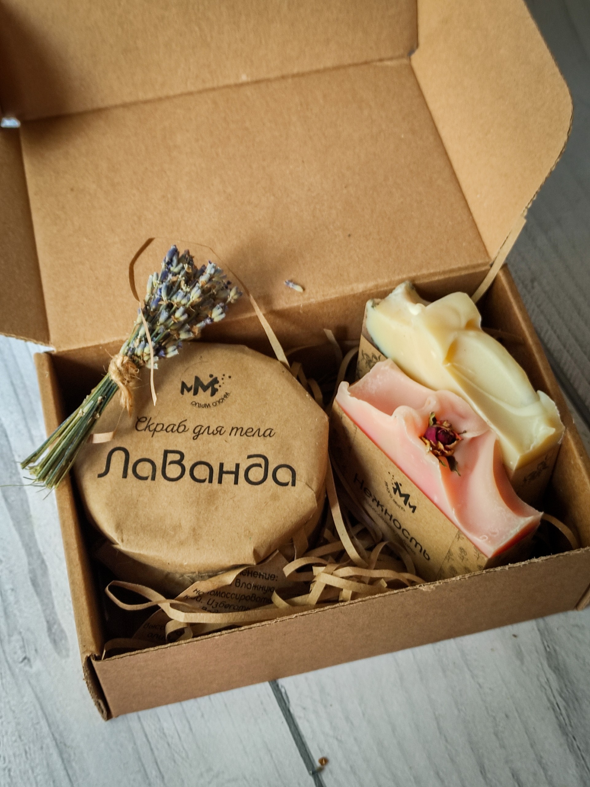
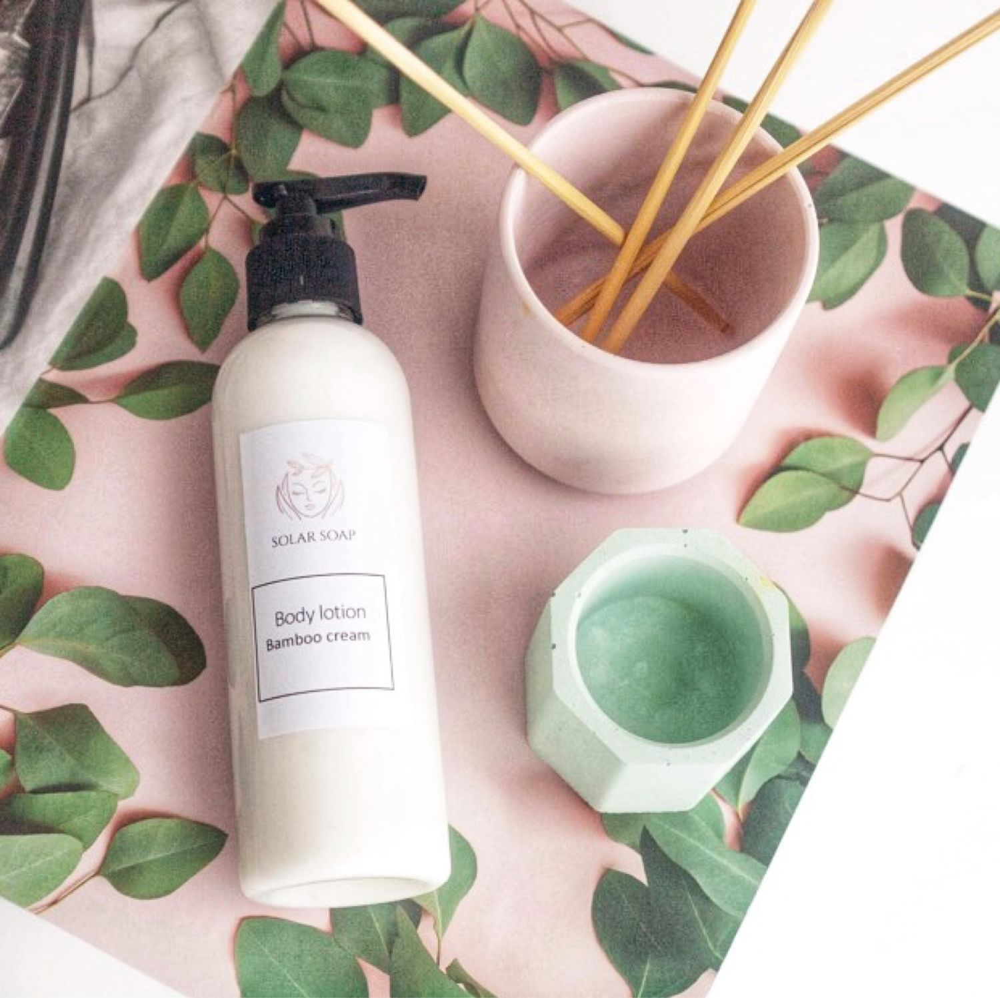
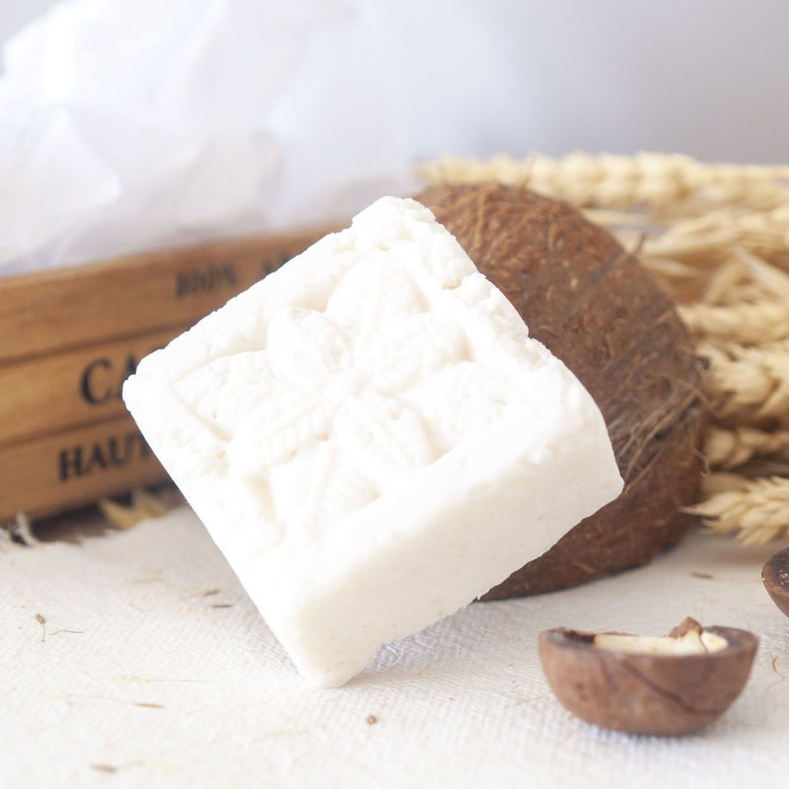

✦ НАТУРАЛЬНАЯ КОСМЕТИКА РУЧНОЙ РАБОТЫ ✦ БЕЗ ТЕСТОВ НА ЖИВОТНЫХ ✦ ЭКОЛОГИЧНАЯ УПАКОВКА ✦ 100% ОРГАНИЧЕСКИЕ ИНГРЕДИЕНТЫ ✦

КАТАЛОГ

МЫЛО
Натуральное мыло с маслом винограда, оливы и какао,
с добавлением эфирного масла
и пудры апельсина.
с добавлением эфирного масла
и пудры апельсина.

СКРАБ ДЛЯ ТЕЛА
В составе — порошок из скорлупы грецкого ореха и морская соль, богатая минералами и микроэлементами. Эти натуральные абразивы эффективно очищают, улучшают микрорельеф кожи, стимулируют кровообращение и способствуют ее обновлению.

ЛОСЬОН ДЛЯ ТЕЛА
Формула лосьона обогащена скваланом из семян камелии и ретинолом, которые работают в комплексе, оказывая ухаживающее и омолаживающее действие.

ШАМПУНЬ - КОНЦЕНТРАТ
Масла кокоса и оливы восстанавливают и укрепляют волосы от корней до самых кончиков, придают гладкость и эластичность. Экстракт киви увлажняет волосы, придает блеск и сияние.
весь каталог